Here are descriptions of some of the more interesting or significant changes made to the Memory Analyzer for the 1.0 release.
Acquire Heap Dumps from within MAT
It is possible now to acquire a heap dump from a locally running JVM directly from Memory Analyzer. The triggered heap dump is then parsed and opened in the tool.
This functionality is achieved using heap dump provider extensions. Currently there is one heap dump provider which can trigger HPROF heap dumps with the help of 'jmap' (part of Sun based JDKs), and several heap dump providers for IBM JVMs.
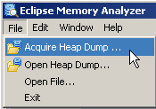

More Flexible Compare Functionality
It is now possible to compare not only the global class histograms of two different heap dumps, but an arbitrary number of table-formatted results - for example the retained sets of three different objects. It doesn't matter if the tables which are compared come from one and the same or different heap dumps.
- Compare the retained set of a specific package across several heap dumps
- Compare how the retained sets for application objects A1, A2 and A3 (all in the same heap dump) differ from each other
Here is a quick description how to compare several retained set tables.
1. Move all tables to be compared to the Compare Basket
All queries which are executed in Memory Analyzer can be seen in the Navigation History View. From this view one can add the results to be compared to the Compare Basket. The Navigation History is still per heap dump, therefore if one wants to compare tables from different heap dumps then they have to be added one by one. Multiple tables from one heap dump can be added at a time.
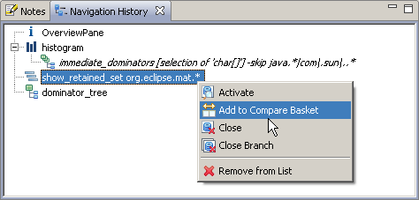
2. Modify the order of the tables
Using the tool bar of the Compare Basket one can modify the order in which talbes should be compared, i.e. select which result should be the baseline, which comes second, etc...
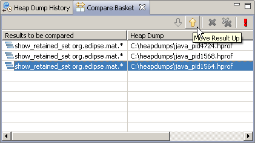
3. Execute the comparison
Once the preferred order is achieved just click the execute button...
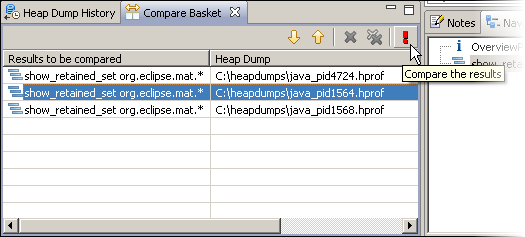
... and see the result.
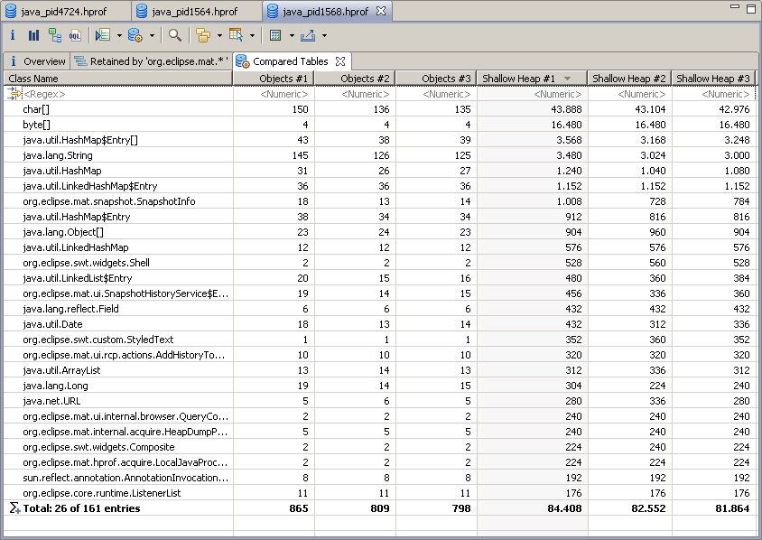
4. Customize the displayed result
By default the absolute values of all tables will be shown for every compared property, e.g. number of objects, shallow size, etc... One can now change between deltas and absolute values, as well as select which columns should be compared:
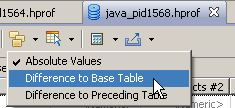 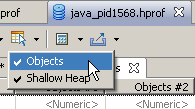
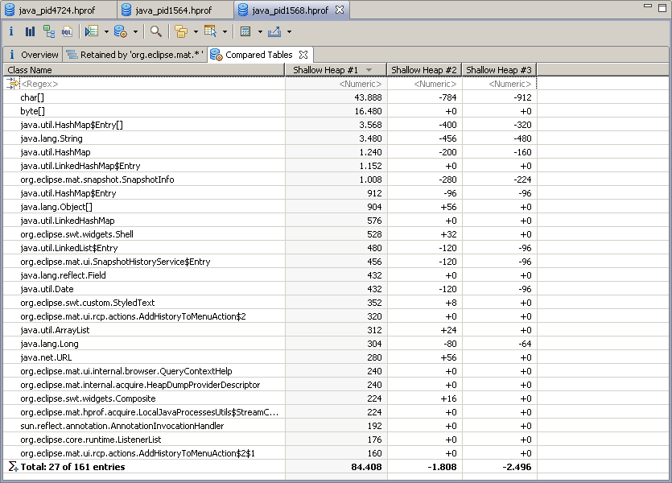
Grouping by Superclass
Now it is also possible to group objects by superclass in a histogram. This provides an easy way to find for example all the subclasses of java.util.AbstractMap, etc...
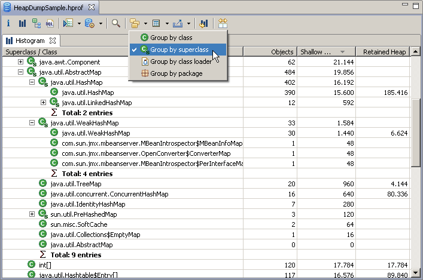
"Search Queries..." in the Context Menu
The query browser ("Search Queries...") is now also available in the context menu. It offers only queries valid for the current selection, and is easier to use as it can display some or all the queries, and shows also the help for each query.
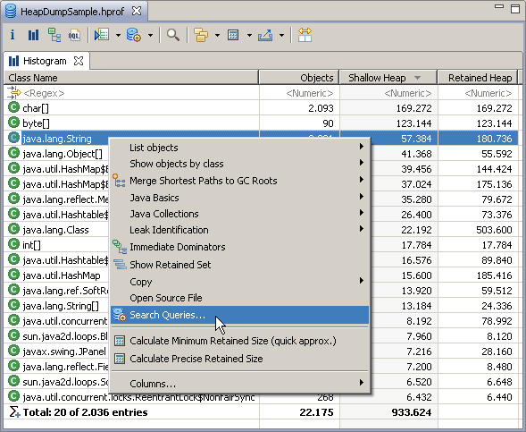
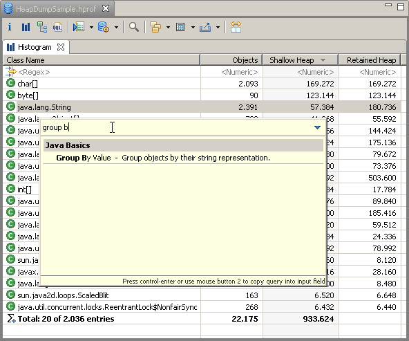
API Reference
To make things easier for people interested in extending Memory Analyzer or writing MAT queries for their specific purposes, a new section "API Reference" was added to the Help topics of Memory Analyzer. It contains Javadoc as well as descriptions for the different extension points which MAT provides.
New & Noteworthy for Memory Analyzer 0.8
The New & Noteworthy document for version 0.8 is available here.